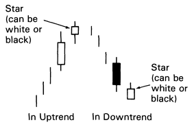
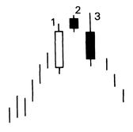
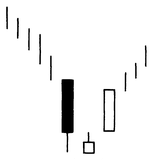
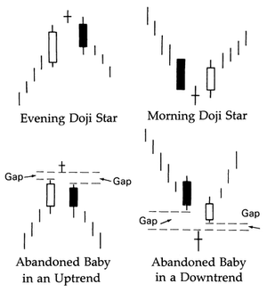
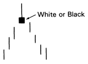
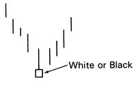

Candlesticks - Stars

Star gaps away from preceding real body.
If Star has no real body, it is called Doji
Evening Star

Top reversal pattern
Morning Star

Bottom reversal pattern
Doji Star

Shooting Star

Inverted Hammer
